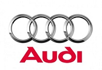

Audi
The origins of the company are complex, going back to the early 20th century and the initial enterprises (Horch and the Audiwerke) founded by engineer August Horch; and two other manufacturers (DKW and Wanderer), leading to the foundation of Auto Union in 1932. The modern era of Audi essentially began in the 1960s when Auto Union was acquired by Volkswagen from Daimler-Benz. After relaunching the Audi brand with the 1965 introduction of the Audi F103 series, Volkswagen merged Auto Union with NSU Motorenwerke in 1969, thus creating the present day form of the company.
